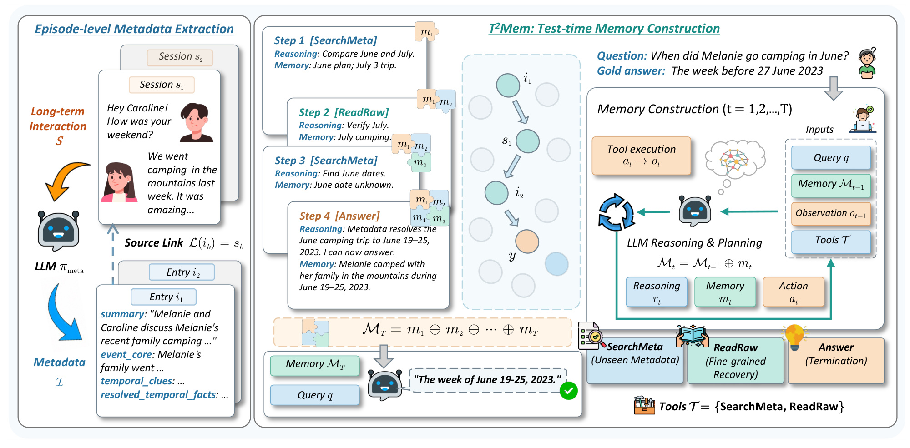
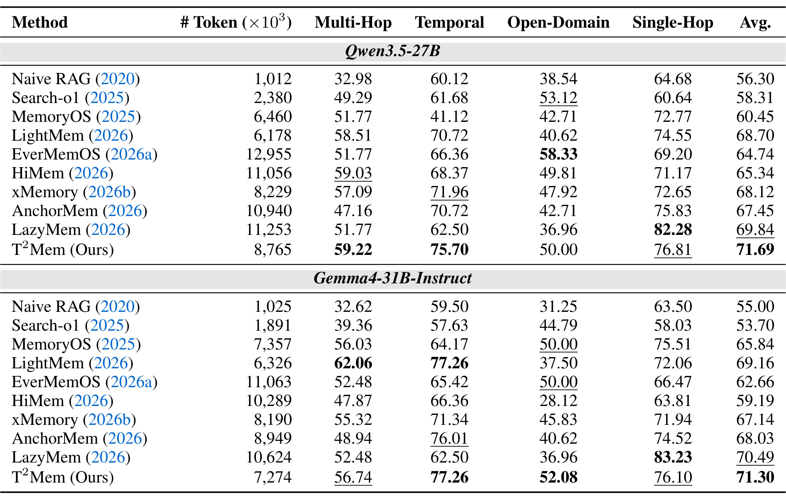
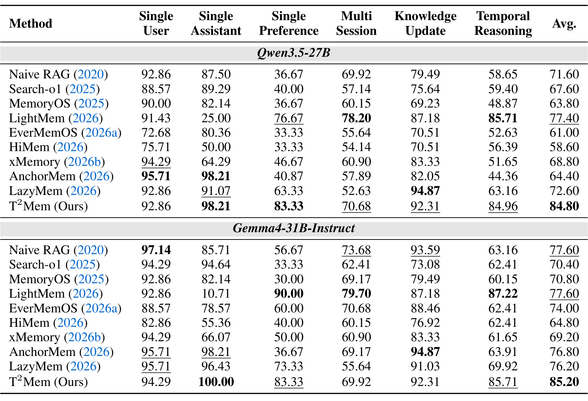
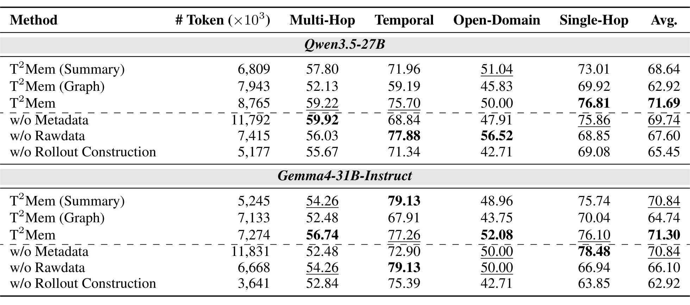
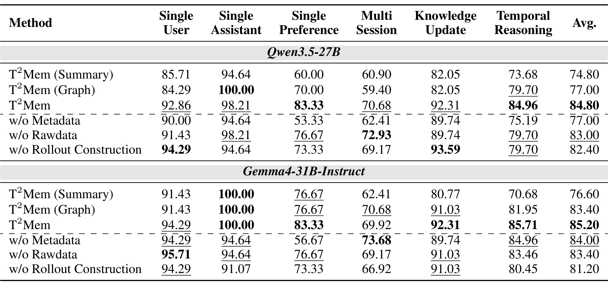
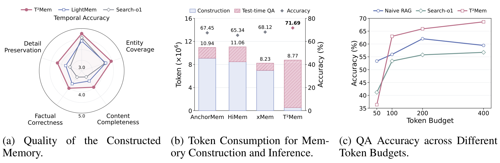
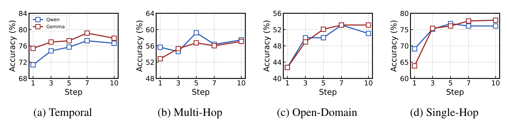

东北大学 T2Mem：在推理过程中构建长期会话记忆
论文标题：Test-Time Memory Construction。第一作者 Zijun Wang 与共同第一作者 Yifan Ji 来自中国东北大学计算机科学与工程学院；合作机构包括清华大学与阿里巴巴。作者还包括 Haidong Xin、Zhenghao Liu、Yukun Yan、Zulong Chen、Yu Gu、Ge Yu、Maosong Sun。
论文发表于 2026 年 10 月 9 日，当前阅读版本为 arXiv v1，核验时间为 2026 年 10 月 13 日北京时间。论文入口。官方 OpenBMB/T2Mem 代码仓库 当前可访问，包含源码、评估与测试目录；本次没有运行代码或复现实验。以下性能数字均来自作者实验，不代表独立复现结果。
离线记忆系统在尚未看到用户问题时，就要把长交互历史组织成复杂记忆，既产生显著构建与维护开销，又难以针对具体问题调整记忆内容；而真正需要的证据往往散落在相距很远的会话中。
1. 背景和问题
长期对话问答的难点通常不是一句话看不懂，而是模型缺少决定该看哪句话的线索。用户可能六月讨论旅行计划，几周后说“上周终于去了”，七月再谈另一次出游。问六月到底什么时候露营，直接搜“露营”会得到许多主题相关的记录，却未必得到把相对时间、事件身份和会话日期组合起来的证据。如果把检索结果全塞进上下文，模型仍需要从重复内容中区分计划、完成事件以及不同月份的同名活动。主题相似只是证据入口，不能直接替代事件关系和时间推理。
常见解决路线把问题向离线阶段移动。每次新会话到来后，调用大模型抽取事实、压缩摘要、合并已有记忆、删除过时信息，并维护主题树或关系图。未来提问时只检索加工后的记忆，在线路径更简洁。然而加工者不知道将来的问题是什么：它必须尽量保留广泛信息，以免未来答不上，又必须压缩历史以控制存储和上下文。两种目标相互牵制。压缩得太少，成本与检索噪声增加；压缩得太多，一个当时看似无关的地名、数量、时间短语可能永久消失。复杂结构能改善检索，但结构本身也需要更新、实体匹配以及冲突处理。
这也是为什么更大的上下文窗口并未完全解决长期记忆。历史持续增长时，完整输入产生较高输入成本与推理延迟；即使文本放得下，模型也可能忽略位于中部的关键证据。传统分块检索把历史切成局部单元，便于向量搜索，却容易截断“上周”“再次”“后来”等依赖前文或会话时间的表达。所谓记忆质量，因此至少包含能找到相关材料、能恢复材料之间的关联、能保留答案所需细节三个层次。仅仅提高命中主题相关片段的概率，不能确保后两个层次成立。
T2Mem 关注一种介于重离线记忆和纯原文检索之间的安排。系统仍在离线阶段抽取会话级元数据，记录关键事件、实体与时间线索，但保留指向原始会话的来源链接。在线阶段看到具体问题后，再由模型决定要搜索哪些新线索、要回读哪段原文以及要把哪些事实组织进当前记忆。这意味着作者推迟的是围绕问题的记忆编排，而不是完全取消离线处理。理解这个边界很关键：如果说“没有离线记忆构建”，就会忽略元数据提取、嵌入索引以及来源维护的真实工作，也会误解成本图里仍存在的蓝色构建部分。
已有推理时记忆方法也会先检索、再整理记忆，但有些做法只在初始候选集合中工作。初始检索漏掉某个重要会话，后续再有精巧的压缩和归纳，也无法凭空得到缺失事实。T2Mem 把这一点变成闭环：已经读到的材料帮助识别目前还缺什么，新的信息需求又触发进一步搜索或原文恢复。它的贡献由“检索更多”转向“根据已有证据判断接下来需要什么”。与普通迭代搜索相比，显式记忆缓存把已获取的实体、事件与时间关系整理成可继续使用的状态，减少搜索过程中线索散失的风险。
论文用人类联想式回忆解释设计动机，但这一类比不应被视为认知科学验证。模型通过文本提示、工具调用和缓存追加实现闭环，不是在学习人脑中的神经记忆机制，也没有为控制器训练新的长期记忆权重。其适用任务是长历史中的会话问答：问题输入确定、原始历史可访问、相关证据可以从元数据入口逐步恢复。对于需要主动规划、实时交互或推荐曝光优化的场景，能否直接受益还需另外评估。这里的记忆是针对一次问题构建的文本状态，不等同于持续更新的用户画像数据库。
这种任务与单纯文档问答还有一个区别：会话中的事实带有说话者、产生时间和生效条件。用户今天说不喜欢某类活动，并不意味着过去从未参加；助手曾提出建议，也不意味着用户实际执行。若把不同来源的陈述都写成一个没有时间或角色的事实集合，未来问题可能无法辨别意图与发生过的事件。T2Mem的元数据仍由模型提取，因此它需要保留这些区分，同时把不能安全压缩的细节留给来源回读。论文通过长期问答验证这一思路，尚未对持续加入新会话、长期事实冲突和权限变化给出完整系统保证。这些边界决定它更适合被理解为一种记忆使用编排，而不是全面完成了持久记忆管理。
一个合理的研究问题因而是：在相似总 token 预算下，把计算资源从问题未知时的全面整理，移到问题已知后的按需构建，能否提高回答准确率？第二个问题是元数据究竟起到什么作用：它只是更短的摘要，还是能通过半结构化字段保留跨会话推理线索？第三个问题是在线额外推理是否具有可控的收益：增加构建步数会持续改善效果，还是很快遇到噪声与收益递减？正文和附录分别提供主结果、替代表示消融、组件移除、token 分配及步数分析，构成评估这三个问题的证据链。
同时，问题专属记忆不必承担所有未来问题的知识储备，却需要在当前问题的有限预算内完成信息识别。这使它把风险从离线遗漏部分转移到在线搜索与停止判断：离线表示再轻量，也应保留足够导航线索；控制器即使推理能力强，也必须有渠道拿到初始候选之外的真实证据。两层缺一都可能导致错误答案，评估时应分开检查索引召回失败与证据整合失败。
阅读时还需要区分三个容易混淆的模型角色。问答和构建过程使用 Qwen3.5-27B 或 Gemma4-31B-Instruct；向量检索使用 BGE-M3；判断答案是否与标准答案一致使用 Qwen3.5-Plus。评审模型名称不能写成系统骨干，也不能把统一评审器误读为人工标注。共同使用一个评审器提高方法间口径一致性，但不会消除评审模型的偏好、对措辞的敏感性或答案宽容程度。以下实验结论均应放在这一自动评审设置之内理解。
2. 方法
2.1 轻量会话元数据与来源回链
作者首先明确传统离线方案的计算位置。设长历史包含多个会话，离线策略把它们提取并组织成持久记忆集合，回答时检索其中相关单元。对应原文式一和式二：
符号解释：这里会话用小写字母表示，查询为问题文本，策略负责抽取、更新和组织事实。持久集合在问题到来前已经确定，后续检索通常只能使用其中保留下来的信息。T2Mem 改为生成轻量元数据并保留会话级回链，原文式三和式四写作：
符号解释：元数据集合用花体字母表示，条目与来源会话一一关联；工具集合让模型间接访问索引与历史，并非把全部历史直接一次性送进模型。附录的提示模板要求组织会话摘要、事件核心、时间线索以及已解析时间事实等半结构化信息。会话日期能帮助把“上周”这样的相对表达转换成可搜索、可推理的时间线索。保留原始会话意味着元数据可以短一些，因为缺少精细数量、表达条件或指代关系时，还有可恢复的证据来源。
这套表示的重点是检索导航与证据恢复的分工。元数据负责让模型判断某个会话是否值得读取，原文负责在需要时恢复完整细节。如果为了降低离线成本而把所有时间信息都删掉，模型可能连相关会话入口都找不到；如果为了保证不漏而把全文复制进元数据，又失去轻量表示的价值。实验中用普通摘要和图表示替换元数据，正是为了检验该折中是否有效。图表示包含结构不等于一定更好，实体关系能否与问题需求对应、时间线索能否清楚表达，仍决定后续模型读到的内容是否有用。
2.2 推理中构建查询专属记忆
系统先取最相关的五个元数据条目作为初始观察，再把问题、已累计记忆、最新观察和可用工具一起交给控制器。下图同时展示离线元数据提取与在线构建循环，示例中的露营问题说明为什么模型需要在六月计划与七月报道之间继续查证。

Figure 1 左侧保存会话与元数据的对应关系，中间用四步示例说明记忆如何随观察增长，右侧给出每一步的输入、输出和工具选择。最初观察里出现六月计划与七月露营，二者都与关键词相关，但还不能确定六月已经完成的露营日期。模型首先搜索更多元数据，再回读原始会话核对七月事件，然后继续搜索六月时间线索，最后把“六月二十七日会话提到上一周露营”组织成可回答的时间事实。记忆缓存因此不是把所有检索内容照搬，而是随着问题逐渐清楚而保留当前有效的事件与日期关系。来源箭头尤其重要：模型能从简短线索回到完整对话，避免把摘要里没有写清的内容当作确定事实。
右侧循环一次联合生成推理、缓存和行动；行动执行产生下一次观察，而缓存追加到累计记忆中。这样，每次新证据既改变可用于最终回答的内容，也影响下一步需要搜索的线索。图中把最终回答画在累计缓存之后，强调回答依赖已经组织出的问题相关状态。这个结构与先取固定候选再压缩的流程有实际差别：初始集合之外的会话仍可以通过新检索进入系统。它也有失败入口：错误的时间解析可能进入缓存，新的搜索又受错误缓存引导，形成自我强化。因此来源回链和细节回读提供纠错机会，却不保证控制器一定选择正确工具。图只演示一次成功轨迹，不能据此判断所有问题的平均工具次数或最坏时延。
作者把控制过程记录为一系列构建步骤，每一步不仅记录新获取的信息，还显式记录为什么需要它以及下一步要采取什么行动。这样可以区分已有缓存和刚刚产生的观察，避免将工具原始返回直接等同于已经完成推理的记忆。三元组序列描述轨迹，拼接描述记忆更新，对应式五至式八与式十：
符号解释：轨迹由推理文本、当前新增缓存与行动构成；下标表示构建步次，拼接表示缓存累计。累计记忆与每一步新增缓存不是同一个变量，前者保存整个推理过程已经组织的证据，后者只描述本步骤提取的内容。实际执行的步数决定最终缓存长度，仍受到最大预算和提前结束行为共同约束。
符号解释：推理轨迹、当前新增缓存和下一步行动分别由三个符号表示；观察是上一个工具返回的信息；拼接符号表示把当前新增文本追加到以前缓存。初始记忆为空。最大步数限制与主动回答共同决定终止：证据足够时行动转为回答，预算耗尽时也结束构建。主实验最大构建步数为五。这里没有引入可证明的最优停止策略，控制器判断“足够”仍依赖提示与模型能力。缓存追加也没有在数学定义上提供自动冲突消解或事实版本覆盖保证，工程复现时必须核对提示如何标记不确定信息与修改之前推断。
2.3 搜索新线索与回读原始会话
两个信息访问工具解决不同的信息缺口。SearchMeta 用检索词取此前未看到的元数据，ReadRaw 沿已看到条目的回链读取原始会话。论文方法部分使用 ReadRaw 命名，附录 Figure 8 的控制器提示使用 SEARCH_WIKI、READ_RAW_FROM_WIKI 与 ANSWER，分别对应继续获取元数据、沿元数据回读原文和结束回答。复现时应确认术语与实现动作的映射，不能凭空添加第三个独立检索源。核心检索定义对应原文式九、式十一至式十三：
符号解释：初始观察是查询最相关的元数据，工具集合包含搜索元数据和原文恢复两项动作。检索数量表示一次返回的条目数，不等于最大构建步数；初始检索返回五条，后续搜索返回一条，这两个配置控制不同阶段的信息输入。观察内容尚未被筛选组织，模型下一步需要从中提取与问题相关的证据再写入缓存。
符号解释：已见集合记录当前问题已经观察过的条目，初始五条进入集合；后续 SearchMeta 每次只取最高排名的一条并追加到已见集合。该约束减少反复读取同一元数据的机会，但并不自动保证问题相关性。原文以查询符号表示检索输入，实际控制器应能根据缺失信息生成相应搜索内容。读者需要区分原始问题与行动里产生的具体线索，否则容易误以为每次都用完全相同的向量检索词机械取下一条。ReadRaw 的参数则是已观察元数据对应的会话标识，不是任意文本生成的虚构来源。
当缺少一个新的事件或时间参照，应搜索新元数据；当已经知道某段会话相关，只是摘要太粗，应回读该会话。这两条路径构成重要的粒度控制：先用便宜的线索判断范围，再用更长的原文解决细节。轻量导航与完整证据之间的切换，是模型把有限预算投向具体问题的方式。它不同于一律提高初始检索数量，因为额外材料只有在已有证据暴露缺口后才进入推理。与此同时，原文回读仍可能带来较长观察、多轮调用增加顺序依赖，搜索与缓存也占输出预算，因此高准确率并不自动意味着更短在线时延。
附录提示让控制器输出结构化 JSON，有助于把思考、记忆缓存和行动交给程序执行；最终回答使用专门模板，评审也另有模板。这个分工说明方法是可在已有模型上实施的推理编排框架，论文没有提出新的训练损失。复现的重点是日期解析、元数据字段、来源标识一致性、检索过滤、工具输出和停止条件，而非寻找缺失的参数更新公式。对于长历史，元数据错误、嵌入召回不足和控制器过早停止都有可能成为瓶颈，原文恢复只对已找到入口的会话有效，无法弥补所有索引层面的遗漏。
3. 实验结果
3.1 设置与 LoCoMo 主结果
作者使用两种骨干评估检索、离线记忆及测试时记忆方法。LoCoMo 排除对抗类别后有一千五百四十个问题，其中单跳八百四十一个、多跳二百八十二个、时间三百二十一个、开放域九十六个；LongMemEval 使用 cleaned 的 s 划分，共五百题。所有方法使用同一评审模型判断与标准答案的一致性。生成温度为零，最大答案长度一千零二十四 token；附录还给出其他生成参数与 vLLM 服务设置。数字是在作者统一实现与评审环境下报告的准确率，类别样本量并不相等，总体平均也不能随意当作类别平均。

Table 1 的上半部分使用 Qwen3.5-27B，T2Mem 平均准确率为百分之七十一点六九，下半部分使用 Gemma4-31B-Instruct，为百分之七十一点三零。相对于各自平均成绩最强的 LazyMem，分别高一点八五和零点八一个百分点；相对于 Naive RAG，分别高十五点三九和十六点三零个百分点。这些差异支持围绕问题构建记忆比仅依靠最初相关文本更有效，但更强的对照也说明增益并非在任何骨干上都很大。特别是 Gemma 对 LazyMem 的总体领先不到一个百分点，若要判断稳定性，需要更多重复实验、置信区间或人工复核，本文不能把它描述为大幅全面领先。
类别列揭示平均分遮蔽的权衡。在 Qwen 下，T2Mem 多跳五十九点二二、时间七十五点七零表现较好；开放域五十点零零低于 EverMemOS 的五十八点三三，单跳七十六点八一低于 LazyMem 的八十二点二八。Gemma 下，LightMem 的多跳六十二点零六高于 T2Mem 的五十六点七四，二者时间同为七十七点二六；LazyMem 的单跳八十三点二三也高于 T2Mem 的七十六点一零。因此“两个骨干平均最优”与“每一类别最好”是不同结论。对于问题分布高度偏单跳的应用，不能直接拿总体均分判断收益，应该按自己的问答类型占比重新加权，并检查最重要类别是否退化。
表里的 token 单位是千，包含该实验范围内的消耗，不能解释为一条问题需要八百多万 token。Qwen 下 T2Mem 合计约八点七六五百万，少于 AnchorMem、HiMem 和 LazyMem，却多于 LightMem 的六点一七八百万，也多于检索基线。Gemma 下约七点二七四百万，同样并非全表最低。作者要证明的是计算分配更有利于准确率与总开销的折中，而不是所有方法中绝对最省。附录还说明 LazyMem 原始记忆处理模型尚未公开，因此用对应骨干替换；这里比较的是替换实现，不能把数字直接作为 LazyMem 原系统的最终性能结论。
3.2 LongMemEval 的泛化与类别例外

Table 2 把任务进一步拆成单会话用户、单会话助手、偏好、多会话、知识更新与时间推理。T2Mem 的总体准确率在 Qwen 和 Gemma 下分别为百分之八十四点八零与八十五点二零，领先最强平均基线七点四与七点六个百分点。这个第二数据集的结果加强了方法并非只对 LoCoMo 的露营类例子有效的证据。偏好与时间任务比较适合按需恢复历史：偏好可能在不同会话以条件形式出现，时间任务需要把相对日期与会话时间结合，这些信息如果过早压缩可能丢失。T2Mem 允许在发现条件或参照缺口时回读完整对话，有助于构建与当前问题更一致的证据。
然而类别表现仍不是统一领先。Qwen 的多会话准确率七十点六八低于 LightMem 的七十八点二零，时间推理八十四点九六也略低于 LightMem 的八十五点七一；知识更新九十二点三一低于 LazyMem 的九十四点八七。Gemma 的单会话偏好八十三点三三低于 LightMem 的九十点零零，多会话六十九点九二低于其七十九点七零，时间推理也低于 LightMem。与此相对，T2Mem 的单会话助手达到九十八点二一和一百，而 LightMem 在该类别仅二十五和十点七一。平均优势的一部分来自避免特定类别的大幅失衡，并不意味着每个难任务都超过结构化记忆。
这种分布提示一个实际检查方向：离线摘要可能更偏重用户陈述，遗漏助手回复；若线上任务需要引用助手之前建议或承诺，保留原文入口会很有价值。但这只是依据结果提出的解释，论文没有通过单独控制助手信息保留策略证实因果关系。复现时可以先对该类别抽样，对比元数据与离线记忆究竟保留了什么。单会话助手只有五十六题，偏好只有三十题，百分比变化对应的题数有限。报告精确到小数点并不意味着统计上具备同样精度，模型评审不确定性还可能影响这些较小类别。
LongMemEval 平均准确率基于整个五百问题集合，六类大小不同：用户七十、助手五十六、偏好三十、多会话一百三十三、知识更新七十八、时间一百三十三。时间与多会话权重大，细分表需要和样本统计一起读。两套骨干的总体结果接近，说明设计在本实验中不只依赖某一个模型，但模型规模、工具遵循能力与时间解析能力仍可能改变收益，不能外推到小模型或任意闭源接口。代码可访问为复现提供起点，尚未执行代码意味着本笔记无法验证作者服务设置、随机性与实现细节是否足以重现这些百分比。
3.3 元数据、原文恢复与闭环构建消融

Table 3 首先替换离线表示，再移除两个信息源或整个 rollout。Qwen 下，完整 T2Mem 为七十一点六九，普通摘要六十八点六四、图表示六十二点九二；去元数据六十九点七四、去原文六十七点六零、去 rollout 六十五点四五。Gemma 下对应完整七十一点三零，摘要七十点八四、图六十四点七四；去元数据七十点八四、去原文六十六点一零、去 rollout 六十二点九二。两套模型中，保留可回读的原文与逐步构建过程都带来明显总体收益，元数据比图表示更有效，但相对普通摘要的收益在 Gemma 上很小。把半结构化表示说成普遍压倒摘要，会忽视这一差异。
去元数据后，Qwen token 从约八点七六五百万增加到十一点七九二百万，Gemma 从七点二七四百万增加到十一点八三一百万，说明直接在原文上闭环构建更昂贵。元数据的作用不仅体现在准确率，也体现在减少导航过程中读入不必要原文的计算。去原文降低了总体消耗，却明显损失单跳细节：Qwen 单跳从七十六点八一降至六十八点八五，Gemma 从七十六点一零降至六十六点九四。这个结果符合来源恢复对细节完整性的作用。不过去原文后的某些时间或开放域类别反而更高，说明额外原文可能带来干扰，不能假设每次回读都提供正向贡献。
去 rollout 的消耗下降更明显，Qwen 为约五点一七七百万，Gemma 为三点六四一百万，但平均准确率也分别下降六点二四和八点三八个百分点。消融支持多轮构建能用更多计算换取质量，不证明它在完全相同消耗下仍有同样增益，因为组件移除同时改变了 token 预算。若要隔离闭环的因果贡献，后续可在相同总 token 限制下比较更大的初始检索、一次性整理和逐步搜索，查看是否仍能保持优势。当前表格已经说明哪些模块互补，却没有提供等成本、等调用次数的全部对照。

Table 5 在另一个数据集上继续检验表示与构建组件。Qwen 完整模型八十四点八零，摘要七十四点八零、图七十七点零零、去元数据七十七点零零、去原文八十三点零零、去 rollout 八十二点四零；Gemma 完整八十五点二零，摘要七十六点六零、图八十三点四零、去元数据八十四点零零、去原文八十三点四零、去 rollout 八十一点二零。相较 LoCoMo，LongMemEval 中 Qwen 对元数据形式更敏感，而 Gemma 的图替换已经接近完整系统。表示选择与骨干能力、问题分布间存在交互，不能只引用其中一列来宣称图记忆不适用。
偏好类别对去元数据尤其敏感。Qwen 从八十三点三三下降到五十三点三三，Gemma 从八十三点三三下降到五十六点六七，暗示半结构化线索能帮助找到分散或带条件的偏好信息。去 rollout 后，两个骨干偏好都变为七十三点三三，时间推理也分别降到七十九点七零和八十点四五。相对而言，去原文对 LongMemEval 平均分影响只有一点八个百分点，远小于 LoCoMo 的下降。这说明已有元数据可能足以回答更多该基准问题，也说明“回读原文是全部收益来源”并不成立。真实部署可以依据问题复杂度探索按需回读，而不必在每轮工具调用中固定读取长会话。
还要注意部分组件移除后多会话准确率略升，例如 Gemma 去元数据为七十三点六八，高于完整模型六十九点九二。作者以平均成绩论证模块贡献是合理的，但工程实践需要寻找失误模式：是否结构线索使模型过于偏向某个事件，是否回读带来冲突陈述，是否构建缓存时遗漏跨会话连接。表格没有给出这些问题的逐例根因，因此这些都是可开展的诊断，而非已证实解释。主文与附录共同表明系统能在平均意义改善记忆，不能推出所有组件对所有类别都必不可少，更不能据此禁止应用自行选择预算和表示。
3.4 计算分配、预算与步数

Figure 2 左侧用五个维度评审构建记忆：时间准确、实体覆盖、内容完整、事实正确与细节保留。T2Mem 在作者使用的模型评分中都较高，符合按需追踪原文证据的直觉。不过这是基于评审提示的记忆质量评分，并不等于人工逐事实核验，也不单独测量隐私、长期冲突处理或实际用户满意度。中间图更直接显示计算移动：AnchorMem、HiMem 和 xMemory 的大量 token 位于离线构建部分，T2Mem 的离线部分较小、在线问答部分较大，总体约八点七七百万。与 xMemory 的八点二三百万相比，T2Mem 总量甚至更高，因而只能说在该设置下以更多查询相关计算取得更高准确率，不能说对所有竞争方案都降低整体花费。
右侧把推理预算从五十提高到四百，T2Mem 呈现明显提升，Search-o1 增长较弱，Naive RAG 没有稳定受益。这支持额外计算需要有效转化成新证据，而不是仅增加回答长度。附录进一步说明预算通过提示控制推理长度，并把完整响应输出上限设为预算加六十四，预留最终答案和格式空间；该限制作用于整个生成响应，没有单独硬性约束推理区长度，而且原生 thinking 模式关闭。横轴因此不能理解为整个系统所有输入、检索与多轮调用合计的严格等额成本。它检验的是特定长度控制设置下的响应，不足以直接换算真实账单或吞吐。
对生产成本，还要考虑同一历史会被查询多少次。离线构建成本可以随查询次数摊销，而在线闭环每个问题都要重复推理。若问题稀少、历史更新频繁、查询分布难预测，轻量索引加按需构建可能更有价值；若同一用户历史被高频反复查询，复杂离线记忆的摊销成本可能较低。这是根据系统结构得到的工程推断，论文没有给出查询频率扫点或真实并发负载实验。合理的服务评估需要分别记录预处理 token、单问题输入输出 token、调用次数、首字时延、尾延迟和缓存命中，再在固定准确率要求下比较不同方案，不能把离线成本下降直接写成在线成本下降。

Figure 3 改变最大允许步数，取一、三、五、七、十，并分别画两套骨干和四类问题。单跳在一到三步之间改善较多，之后很快趋于平台，符合简单证据通常不需要长链搜索的特点。时间和开放域在更深构建下还有提升空间，七步附近达到较好结果，再到十步的改善有限。多跳曲线并不单调，Qwen 在五步附近较高，七步下降再略恢复，说明额外检索并非总能提供有效信息。图中的最高点是特定数据分布的结果，不是上线默认步数应该设为七的普遍规则；主实验仍使用五步作为统一限制。
最大步数控制与实际停止步数分析应分开。附录 Figure 4 按模型实际用了几步来分组，组内问题难度、证据覆盖和主动停止行为都不同，不能把后者直接当作多执行一步的因果增益。部分组只有少量问题，百分比差异会受到样本量影响。最大预算图至少明确改变了一个控制参数，但它仍没有等在线延迟的对照或每个点置信区间。有效的后续做法是按题目复杂度与初始证据充分性动态设置预算，并检查失败问题中新增步骤是在补充证据还是反复确认错误推断。提前停止策略若能保持准确率，可以减少在线顺序调用。
论文案例提供了可理解的过程证据：六月二十七日的“上周露营”材料在初始观察中缺失，系统通过进一步搜索与来源恢复补上，最终得到六月十九至二十五日这一时间范围。附录热度分析则展示另一问题中，LightMem 的“她的祖国”描述虽然被模型重视，仍不能给出具体国家；相关材料与完整答案之间存在细节落差。热度用教师强制前向传播，对输出到输入的注意力跨层、头和输出位置取平均，并分别归一化显示。独立归一化不能比较两个系统绝对注意力大小，注意力相关性也不证明某 token 是答案正确的原因。这些案例说明机制可能如何工作，与总体表格互相补充，无法代替大规模误差分析。
4. 总结
T2Mem 提供的核心变化是把记忆编排的决策时间移动到具体问题出现之后。离线层保留轻量事件和时间线索以及原文链接，在线层把检索、回读和记忆组织交织成可继续展开的推理过程。对长会话问答，这种安排避免要求离线摘要预先猜中所有未来问题，也避免让在线模型只能在第一次检索得到的候选中整理证据。它的主要价值是增加问题与记忆内容之间的适配性，而不是提出新的参数化训练算法或全面取消预处理。
实验给出四个数据集与骨干组合的平均准确率优势，LoCoMo 为七十一点六九和七十一点三零，LongMemEval 为八十四点八零和八十五点二零。表示替换、原文访问与 rollout 消融支持元数据导航、细节恢复和逐步构建之间的互补关系。最值得记住的证据边界是类别存在例外、组件贡献随数据集变化、与摘要的差距在某些设置很小。平均最优并不代表每类最优，总 token 相似也不代表在线延迟相同。对于工程读者，细分结果和计算分配图比一句“效果更好、成本更低”更有决策价值。
迁移到个性化助手或推荐解释时，可以尝试把用户历史事件的元数据作为索引，把原始交互作为可追溯证据，再在用户提出具体需求时按需组织信息。例如“为什么最近推荐户外用品”可能需要连接浏览事件、过去表达的计划和时间变化。这里的迁移只是根据机制提出的研究方案，论文没有推荐排序、点击率或转化率实验。推荐系统还包含曝光选择偏差、负反馈、兴趣变化和大量非文本行为，文本会话的来源链接不能自动解决这些问题。应先在解释或辅助问答等低频任务上验证，再讨论是否进入高频排序链路。
有四项局限需要持续保留。第一，在线多轮工具调用带来顺序依赖，论文没有给出真实并发下的尾延迟、货币成本或高频查询摊销曲线，成本优势依赖工作负载。第二，评估依赖统一大模型评审，缺少人工逐事实复核与重复实验统计，特别是少样本类别中细小差距需要谨慎解释。第三，元数据抽取与检索仍可能漏掉入口或错误解析时间，缓存追加和来源回读提供补救机会，但没有形式化保证能够发现矛盾、撤销过时事实或避免错误强化。
第四，框架保留原始会话以供回读，实际个人助手的原文可能包含敏感信息；论文没有评估权限隔离、历史删除后索引与缓存一致性、工具返回中的隐私过滤。该问题不会被较短元数据自动解决，原文入口仍需遵守数据访问与保留规则。论文基准也不能说明系统已经达到这些服务要求。
后续最有价值的工作是以相同 token 和延迟预算复核闭环构建相对一次性大检索的收益；按同一历史的查询次数绘制离线与在线成本交叉点；再抽样检查时间解析、助手信息、偏好更新与来源回读的失败轨迹。这些检查能区分准确率提升来自表示、检索覆盖还是额外推理计算。官方仓库已经公开，并包含实现与评估目录，因此可以进一步核对方法名与接口映射，但本次未执行任何实验，不能把可访问代码当成复现成功。当前结论适合作为长期对话记忆架构的设计参考，部署选择仍需结合实际问题分布、响应预算与证据追溯要求。